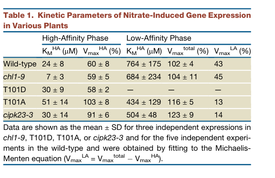

CHL1 (NPF6.3 / NRT1.1; At1g12110, UniProt Q05085) is the founding member of the plant NRT1/PTR (NPF) nitrate transporter family and the first cloned plant nitrate transporter. It is a plasma-membrane, proton-coupled nitrate symporter belonging to the major facilitator superfamily (MFS), expressed most strongly in roots (epidermal and vascular cells) as well as guard cells. CHL1 is a dual-affinity transporter showing biphasic kinetics, with a high-affinity phase (Km ~50 uM) and a low-affinity phase (Km ~4 mM). The affinity mode is switched by phosphorylation of Thr101 by the CBL1/CBL9-CIPK23 kinase module: phosphorylation favors high-affinity transport while dephosphorylation favors low-affinity transport. Beyond transport, CHL1 acts as a nitrate sensor ("transceptor") that initiates the primary nitrate response and regulates expression of other nitrate transport genes such as NRT2.1; its sensing function is separable from its uptake activity. CHL1 also facilitates basipetal auxin transport, linking local nitrate availability to lateral root development, and contributes to stomatal opening and to root-to-shoot nitrate translocation. The gene was originally identified through chlorate-resistance screens (chlorate is a toxic nitrate analog), giving rise to the CHL1 name.
Definition: A signaling cascade initiated by perception of extracellular nitrate by a nitrate sensor/transceptor (such as CHL1/NRT1.1), leading to CBL/CIPK-mediated phosphorylation events and downstream transcriptional reprogramming (primary nitrate response).
Justification: No precise GO term currently captures the transceptor-initiated nitrate signaling pathway distinct from the generic "response to nitrate" (GO:0010167). The falcon synthesis describes nitrate-induced Ca2+ signals perceived by CBL1/CBL9, activating CIPK23, which phosphorylates NRT1.1 at Thr101 and shifts apparent affinity from Km ~4 mM to Km ~40 uM.
Parent term: response to nitrate
| GO Term | Evidence | Action | Reason |
|---|---|---|---|
|
GO:0006857
oligopeptide transport
|
IEA
GO_REF:0000002 |
REMOVE |
Summary: Oligopeptide transport is inferred from membership in the proton-dependent oligopeptide transporter (POT/PTR) family (InterPro IPR018456). The NPF/NRT1-PTR family is evolutionarily related to peptide transporters, but CHL1/NRT1.1 specifically transports nitrate, not peptides.
Reason: Family-level (InterPro) over-annotation. CHL1/NRT1.1 recognizes specifically nitrate and chlorate but NOT the di-peptide Ala-Ala (UniProt FUNCTION), so peptide transport is not a function of this protein. The PTR family name reflects ancestry, not CHL1 substrate specificity.
Supporting Evidence:
file:ARATH/CHL1/CHL1-deep-research-falcon.md
Across sources, nitrate (NO3−) is the core substrate, and NPF6.3 contributes substantially to nitrate uptake
|
|
GO:0016020
membrane
|
IEA
GO_REF:0000120 |
MODIFY |
Summary: Generic membrane localization from UniProt/InterPro. CHL1 is a multi-pass membrane protein.
Reason: "Membrane" is correct but uninformative; the experimentally established and functionally relevant location is the plasma membrane (GO:0005886), which is already annotated (IDA). Generalize/replace with the more specific term.
Proposed replacements:
plasma membrane
Supporting Evidence:
file:ARATH/CHL1/CHL1-deep-research-falcon.md
localizes to the **plasma membrane** of **root epidermal** and **vascular** cells, with additional localization reported in **guard cells**
|
|
GO:0022857
transmembrane transporter activity
|
IEA
GO_REF:0000002 |
MODIFY |
Summary: Generic transmembrane transporter activity inferred from InterPro domains. CHL1's actual transported substrate is nitrate.
Reason: Too general. The specific, experimentally established molecular function is nitrate transmembrane transporter activity (GO:0015112), already annotated (IMP). Replace the generic parent with the specific child.
Proposed replacements:
nitrate transmembrane transporter activity
Supporting Evidence:
file:ARATH/CHL1/CHL1-deep-research-falcon.md
NPF6.3/CHL1/NRT1.1 is widely regarded as a **dual-affinity** nitrate transporter with **biphasic kinetics**, enabling transport across a wide external nitrate range.
|
|
GO:0055085
transmembrane transport
|
IEA
GO_REF:0000002 |
MODIFY |
Summary: Generic transmembrane transport process inferred from InterPro. CHL1's specific process is nitrate transmembrane transport.
Reason: Too general. The specific, experimentally established process is nitrate transmembrane transport (GO:0015706), already annotated (IMP). Replace the generic parent with the specific child.
Proposed replacements:
nitrate transmembrane transport
Supporting Evidence:
file:ARATH/CHL1/CHL1-deep-research-falcon.md
Across sources, nitrate (NO3−) is the core substrate, and NPF6.3 contributes substantially to nitrate uptake
|
|
GO:0005515
protein binding
|
IPI
PMID:19766570 CHL1 functions as a nitrate sensor in plants. |
MODIFY |
Summary: Protein binding (IPI) capturing the physical interaction between CHL1/NRT1.1 and the protein kinase CIPK23 (Q93VD3). CIPK23 phosphorylates CHL1 at Thr101 and is the kinase that controls the high/low-affinity switch and nitrate signaling.
Reason: "protein binding" is uninformative on its own. The functionally meaningful relationship is that CHL1 is a substrate/partner of the CIPK23 kinase in the CBL-CIPK nitrate-signaling module. Replace with a kinase-binding term to capture the regulatory interaction.
Proposed replacements:
protein kinase binding
Supporting Evidence:
file:ARATH/CHL1/CHL1-deep-research-falcon.md
Nitrate-induced Ca2+ signals are perceived by **CBL1/CBL9**, activating **CIPK23**, which phosphorylates NRT1.1 at Thr101 and shifts apparent affinity from **Km ~4 mM** to **Km ~40 µM**.
|
|
GO:0005515
protein binding
|
IPI
PMID:31431511 Phosphorylation-Mediated Dynamics of Nitrate Transceptor NRT... |
REMOVE |
Summary: Protein binding (IPI) from a high-throughput/interaction study reporting an interaction with AT2G45820 (a membrane-associated protein). This is a generic binding annotation with the interactant indicated only by WITH/FROM.
Reason: Generic "protein binding" provides no functional information and the interactant (AT2G45820) does not correspond to a well-characterized CHL1 functional partner in the literature. Per curation guidelines, uninformative protein binding should not be retained; the meaningful regulatory interaction (CIPK23) is captured separately.
|
|
GO:0005886
plasma membrane
|
IDA
PMID:31431511 Phosphorylation-Mediated Dynamics of Nitrate Transceptor NRT... |
ACCEPT |
Summary: CHL1/NRT1.1 is directly localized to the plasma membrane (IDA). As a multi-pass membrane protein expressed in root epidermal/vascular cells and guard cells, the plasma membrane is the functionally relevant location for nitrate uptake from the soil solution.
Reason: Plasma-membrane localization is experimentally established (IDA, PMID:31431511) and is the correct, specific cellular component for this nutrient uptake transporter.
Supporting Evidence:
|
|
GO:0010540
basipetal auxin transport
|
IMP
PMID:31431511 Phosphorylation-Mediated Dynamics of Nitrate Transceptor NRT... |
KEEP AS NON CORE |
Summary: CHL1/NRT1.1 contributes to basipetal auxin transport, removing auxin from lateral root primordia under low nitrate and thereby restraining lateral root growth; higher nitrate represses this effect.
Reason: Experimentally supported (PMID:20627075, PMID:31431511) and mechanistically important for nitrate-dependent root architecture, but a downstream developmental output rather than the core molecular function. Keep as non-core.
Supporting Evidence:
file:ARATH/CHL1/CHL1-deep-research-falcon.md
NRT1.1 facilitates basipetal auxin transport and negatively regulates auxin biosynthesis/transport-related genes (e.g., TAR2, LAX3), thereby removing auxin from lateral root primordia under low nitrate and inhibiting lateral root growth
|
|
GO:0048527
lateral root development
|
IMP
PMID:31431511 Phosphorylation-Mediated Dynamics of Nitrate Transceptor NRT... |
KEEP AS NON CORE |
Summary: CHL1/NRT1.1 links local nitrate supply to lateral root development via nitrate signaling and auxin-related mechanisms.
Reason: A genuine, experimentally supported developmental role downstream of nitrate sensing and auxin transport, but pleiotropic/developmental rather than the core transport-sensing function. Keep as non-core.
Supporting Evidence:
file:ARATH/CHL1/CHL1-deep-research-falcon.md
NPF6.3 links local nitrate supply to lateral root development through nitrate signaling and auxin-related mechanisms.
|
|
GO:0048573
photoperiodism, flowering
|
IMP
PMID:30972097 NRT1.1 Regulates Nitrate Allocation and Cadmium Tolerance in... |
UNDECIDED |
Summary: A single IMP annotation links CHL1/NRT1.1 to photoperiodic flowering, consistent with nitrate-status effects on flowering time.
Reason: The cited reference PMID:30972097 ("NRT1.1 Regulates Nitrate Allocation and Cadmium Tolerance in Arabidopsis", Jian et al., Front Plant Sci 2019) is entirely about cadmium tolerance and nitrate/vacuolar allocation; the word "flower"/"flowering" does not appear anywhere in the full text, and the only photoperiod mention is the standard "16-h photoperiod" growth condition. The cited paper therefore provides no evidence for photoperiodic flowering, so the GO:0048573 IMP annotation appears to be a TAIR curation error (likely a mis-attributed PMID). Marking UNDECIDED pending clarification rather than propagating the annotation; this should be reported to TAIR.
|
|
GO:0010167
response to nitrate
|
IMP
PMID:17148611 The Arabidopsis NRT1.1 transporter participates in the signa... |
ACCEPT |
Summary: CHL1/NRT1.1 acts as a nitrate sensor ("transceptor") that initiates the primary nitrate response. Mutant analyses (chl1 alleles) separate uptake from signaling defects, showing that CHL1 controls nitrate-responsive gene expression independently of its uptake activity.
Reason: The transceptor/nitrate-sensing function is a landmark, experimentally validated role (PMID:19766570; uptake-deficient but sensing-competent mutants). Strongly corroborated by the falcon synthesis.
Supporting Evidence:
PMID:19766570
CHL1 functions as a nitrate sensor in plants
file:ARATH/CHL1/CHL1-deep-research-falcon.md
A core concept in nitrate biology is that NPF6.3 acts as a **transceptor**—a transporter with receptor-like signaling capability—helping initiate the **primary nitrate response (PNR)** and modulating expression of other nitrate transport genes (e.g., **NRT2.1**) and developmental programs.
file:ARATH/CHL1/CHL1-deep-research-falcon.md
Mutant analyses (e.g., chl1 alleles) separate uptake from signaling defects and show that CHL1 controls nitrate-responsive gene expression and signaling across high- and low-nitrate ranges.
|
|
GO:0009414
response to water deprivation
|
IMP
PMID:12509525 The nitrate transporter AtNRT1.1 (CHL1) functions in stomata... |
KEEP AS NON CORE |
Summary: chl1 mutants show reduced stomatal opening and reduced transpiration, conferring enhanced drought tolerance; thus CHL1 contributes to stomatal physiology and the response to water deprivation through its guard-cell expression.
Reason: Experimentally supported (PMID:12509525) but a pleiotropic guard-cell role secondary to the core nitrate transport/sensing function. Keep as non-core.
Supporting Evidence:
PMID:12509525
The nitrate transporter AtNRT1.1 (CHL1) functions in stomatal opening and contributes to drought susceptibility in Arabidopsis
|
|
GO:0015112
nitrate transmembrane transporter activity
|
IMP
PMID:9844028 The Arabidopsis CHL1 protein plays a major role in high-affi... |
ACCEPT |
Summary: Nitrate transmembrane transporter activity is the core molecular function of CHL1/NRT1.1, demonstrated by mutant analysis (chl1 alleles cause reduced nitrate uptake and chlorate resistance) and by heterologous expression in Xenopus oocytes, where CHL1 transports nitrate by proton-coupled symport over a wide concentration range (dual-affinity, biphasic kinetics; Km ~50 uM high-affinity and ~4 mM low-affinity phases).
Reason: This is the well-established, experimentally validated core function of CHL1/NRT1.1, the first cloned plant nitrate transporter. Supported by decades of primary literature (PMID:8453665, PMID:10330471, PMID:24572362, PMID:24572366) and corroborated by the falcon deep research synthesis.
Supporting Evidence:
PMID:9844028
The Arabidopsis CHL1 protein plays a major role in high-affinity nitrate uptake
file:ARATH/CHL1/CHL1-deep-research-falcon.md
NPF6.3/CHL1/NRT1.1 is widely regarded as a **dual-affinity** nitrate transporter with **biphasic kinetics**, enabling transport across a wide external nitrate range.
file:ARATH/CHL1/CHL1-deep-research-falcon.md
NPF6.3 is described as a **proton-coupled nitrate symporter**.
|
|
GO:0015706
nitrate transmembrane transport
|
IMP
PMID:9844028 The Arabidopsis CHL1 protein plays a major role in high-affi... |
ACCEPT |
Summary: CHL1/NRT1.1 mediates nitrate transmembrane transport, the biological-process counterpart of its nitrate transporter activity, contributing a large fraction of root nitrate uptake across a broad external nitrate range.
Reason: Directly supported by mutant uptake assays and heterologous expression. The falcon synthesis estimates CHL1/NPF6.3 contributes roughly 10-80% of whole-plant nitrate uptake depending on nitrate concentration.
Supporting Evidence:
file:ARATH/CHL1/CHL1-deep-research-falcon.md
AtNPF6.3 has been estimated to contribute roughly 10–80% of whole-plant nitrate uptake.
|
Q: Beyond Thr101, how do the CNGC15 Ca2+ channel complex and ABI2/ABA inputs quantitatively tune the balance between CHL1's transport and signaling outputs in vivo?
Q: What structural changes accompany the homodimer-to-monomer transition upon Thr101 phosphorylation, and how do they convert the transporter between high- and low-affinity kinetic modes?
Q: Should TAIR be contacted about the GO:0048573 (photoperiodism, flowering) IMP annotation? Its cited reference PMID:30972097 concerns nitrate allocation and cadmium tolerance and contains no flowering evidence, suggesting a mis-attributed PMID / database error.
Experiment: Compare transport-dead but sensing-competent mutants (e.g., Pro492 variants) with sensing-dead variants in planta, measuring both nitrate uptake (15N flux, electrophysiology in oocytes) and primary-nitrate-response gene induction (e.g., NRT2.1, NIA1) to dissect the two functions.
Hypothesis: CHL1's nitrate-sensing (transceptor) function is mechanistically separable from its transport activity and depends on distinct residues.
Type: structure-function and physiological analysis
Experiment: Use phospho-specific antibodies and phosphomimic/non-phosphorylatable Thr101 mutants across a nitrate concentration gradient, combined with cipk23 and cbl1 cbl9 mutants, to quantify how phosphorylation state correlates with apparent Km in vivo.
Hypothesis: The CBL1/CBL9-CIPK23 module phosphorylates Thr101 in a nitrate-concentration- dependent manner to switch transport affinity.
Type: biochemical and genetic analysis
I begin with the domain architecture. The N-terminus carries a Toll/interleukin-1 receptor homology module captured by IPR035897 (TIR domain superfamily, residues 12–140 and 15–171) and specifically by IPR000157 (TIR domain, residues 16–170 and 20–175). This tandem superfamily/domain coverage indicates a canonical plant TIR module positioned at the extreme N-terminus. Immediately downstream, the sequence transitions into a P-loop NTPase core defined by IPR027417 (P-loop containing nucleoside triphosphate hydrolase superfamily, residues 172–324 and 178–409), with a well-delimited IPR002182 NB-ARC domain (residues 199–348) and an IPR003593 AAA+ ATPase domain (residues 202–332). The C-terminal region includes IPR042197 (Apoptotic protease-activating factors, helical domain superfamily, residues 331–412), the helical scaffold that stabilizes the nucleotide-bound switch and oligomerization interfaces in NB-ARC/Apaf-like assemblies. The entire polypeptide is classified by IPR044974 (Disease resistance protein, plants family, residues 18–402), which unifies these modules into a plant immune receptor of the TIR–NB-ARC class. The ordered layout—TIR at the N-terminus followed by an NB-ARC/AAA+ P-loop engine and a C-terminal helical scaffold—creates a receptor that remains autoinhibited in the absence of stimulus and, upon activation, oligomerizes and exposes N-terminal effector surfaces.
This architecture causes a molecular function centered on regulated protein binding (GO:0005515). The TIR domain provides a docking surface for downstream immune adaptors, while the NB-ARC/AAA+ core drives conformational switching and multimerization, thereby increasing avidity for partner proteins. The P-loop NTPase cycle gates assembly: ATP-bound states favor the active oligomer, and ADP-bound states favor the inactive monomer, ensuring stimulus-coupled protein–protein interactions.
At the process level, such a TIR–NB-ARC receptor is a trigger for immune signaling. Oligomerization of the NB-ARC core exposes the TIR domain, which then recruits signaling partners to initiate defense pathways. This mechanism directly supports roles in defense response to fungus (GO:0050832) and defense response to bacterium (GO:0042742). The same signaling cascade is known to culminate in localized programmed cell death to contain infection, aligning with positive regulation of cell death (GO:0010942). The presence of a TIR domain suggests engagement of TIR-dependent pathways that can activate transcriptional defenses and cell death programs; the NB-ARC switch ensures that these outputs are tightly coupled to pathogen perception.
Cellular localization follows from the signaling logic and the provided compartment label. The GO:0005739 mitochondrion placement is consistent with immune receptor activation at or near mitochondria, where signaling nodes for reactive oxygen species production and death control assemble. The NB-ARC helical domain (Apaf-like) further supports mitochondrial proximity, as Apaf-like assemblies often interface with mitochondrial signaling hubs. Thus, a mitochondrial locale provides the platform for rapid conversion of receptor activation into oxidative and transcriptional outputs that drive defense and cell death.
From this, a mechanistic hypothesis emerges. In the resting state, the NB-ARC holds the TIR domain in a closed conformation. Pathogen-derived effectors or host guardees perturb this equilibrium, allowing the NB-ARC/AAA+ module to bind and hydrolyze NTPs, driving oligomerization. The exposed TIR domain then nucleates a signaling complex at mitochondria, recruiting immune adaptors and helper NLRs to propagate defense and execute cell death. Post-translational control likely tunes this switch: ERAD-associated E3 ubiquitin-protein ligase HRD1A could ubiquitinate the receptor to restrain signaling, while Ubiquitin C-terminal hydrolase 22 could remove ubiquitin to stabilize or reactivate the receptor. Additional partners are expected among TIR-NBS-LRR immune components that assemble higher-order complexes to amplify the defense response.
## Functional Summary
A plant intracellular immune receptor that uses an N-terminal signaling module coupled to a nucleotide-gated switch to detect pathogen challenge and initiate defense. Upon activation, it oligomerizes and exposes effector surfaces that assemble signaling complexes at mitochondria, driving antimicrobial responses and promoting programmed cell death to contain infection. Its activity is likely tuned by ubiquitination and deubiquitination, with an E3 ligase dampening signaling and a deubiquitinase restoring competence.
## UniProt Summary
Probable disease resistance protein.
## InterPro Domains
- IPR035897: Toll/interleukin-1 receptor homology (TIR) domain superfamily (homologous_superfamily) [12-140]
- IPR035897: Toll/interleukin-1 receptor homology (TIR) domain superfamily (homologous_superfamily) [15-171]
- IPR000157: Toll/interleukin-1 receptor homology (TIR) domain (domain) [16-170]
- IPR044974: Disease resistance protein, plants (family) [18-402]
- IPR000157: Toll/interleukin-1 receptor homology (TIR) domain (domain) [20-175]
- IPR027417: P-loop containing nucleoside triphosphate hydrolase (homologous_superfamily) [172-324]
- IPR027417: P-loop containing nucleoside triphosphate hydrolase (homologous_superfamily) [178-409]
- IPR002182: NB-ARC (domain) [199-348]
- IPR003593: AAA+ ATPase domain (domain) [202-332]
- IPR042197: Apoptotic protease-activating factors, helical domain (homologous_superfamily) [331-412]
## GO Term Predictions
### Molecular Function
### Biological Process
### Cellular Component
The research report should be a detailed narrative explaining the function, biological processes, and localization of the gene product. Citations should be given for all claims.
You should prioritize authoritative reviews and primary scientific literature when conducting research. You can supplement
this with annotations you find in gene/protein databases, but these can be outdated or inaccurate.
We are specifically interested in the primary function of the gene - for enzymes, what reaction is catalyzed, and what is the substrate specificity? For transporters, what is the substrate? For structural proteins or adapters, what is the broader structural role? For signaling molecules, what is the role in the pathway.
We are interested in where in or outside the cell the gene product carries out its function.
We are also interested in the signaling or biochemical pathways in which the gene functions. We are less interested in broad pleiotropic effects, except where these elucidate the precise role.
Include evidence where possible. We are interested in both experimental evidence as well as inference from structure, evolution, or bioinformatic analysis. Precise studies should be prioritized over high-throughput, where available.
The literature surveyed here corresponds to Arabidopsis thaliana NPF6.3, also known as CHL1 and NRT1.1 (AGI locus AT1G12110), matching the UniProt record Q05085 description of an NRT1/PTR (NPF) family transporter in the major facilitator superfamily (MFS). This protein is consistently described as a plasma-membrane nitrate transporter with an additional nitrate-sensing (“transceptor”) function. (ho2009chl1functionsas pages 1-2, sun2015molecularmechanismunderlying pages 1-2, nedelyaeva2024functionalandmolecular pages 2-4)
NPF6.3/CHL1/NRT1.1 is widely regarded as a dual-affinity nitrate transporter with biphasic kinetics, enabling transport across a wide external nitrate range. A recent 2024 review summarizes the two kinetic phases as Km ≈ 40–80 µM (high-affinity) and Km ≈ 4 mM (low-affinity). (nedelyaeva2024functionalandmolecular pages 8-9)
A structural/mechanistic review similarly reports a high-affinity phase around Km ≈ 50 µM and low-affinity phase around Km ≈ 4 mM, and emphasizes that this dual-affinity behavior is uncommon among NPF family members. (sun2015molecularmechanismunderlying pages 1-2)
A core concept in nitrate biology is that NPF6.3 acts as a transceptor—a transporter with receptor-like signaling capability—helping initiate the primary nitrate response (PNR) and modulating expression of other nitrate transport genes (e.g., NRT2.1) and developmental programs. (ho2009chl1functionsas pages 1-2, sun2015molecularmechanismunderlying pages 1-2)
NPF6.3 is described as a proton-coupled nitrate symporter. Recent mechanistic synthesis highlights essential structural determinants including the ExxER motif (linked to proton binding/coupling) and His356 in the nitrate-binding pocket; mutation of His356→Ala abolishes nitrate transport activity. (nedelyaeva2024functionalandmolecular pages 4-7, nedelyaeva2024functionalandmolecular pages 2-4)
The 2024 review also summarizes gating/transition features, including a K164–E476 salt bridge involved in pore opening/closing and other residues (e.g., Thr360, Phe511) contributing to substrate specificity/transport. (nedelyaeva2024functionalandmolecular pages 4-7)
A central and well-supported mechanism is that Thr101 serves as an affinity-mode switch: phosphorylation favors high-affinity transport, whereas dephosphorylation favors low-affinity transport. This is repeatedly documented in both primary and review literature. (ho2009chl1functionsas pages 1-2, nedelyaeva2024functionalandmolecular pages 2-4, sun2015molecularmechanismunderlying pages 1-2)
A 2024 review further summarizes that in low external nitrate (micromolar range), CIPK23 phosphorylates Thr101 and this is associated with a shift toward high-affinity behavior, whereas at higher nitrate (millimolar range) the transporter behaves predominantly in low-affinity mode. (nedelyaeva2024functionalandmolecular pages 2-4)
Visual evidence: Ho et al. (2009) provide an experimentally grounded summary model for this phosphorylation switch and a kinetic parameter table for nitrate-response behavior (Table 1; Figure 7). (ho2009chl1functionsas media 4ff1d3c7, ho2009chl1functionsas media 07e97324)
A 2023 review describes NRT1.1/CHL1 as a plasma-membrane component of nitrate signaling that interfaces with Ca2+ dynamics: NRT1.1 forms a complex with CNGC15, and nitrate changes weaken this interaction, enabling CNGC15 Ca2+ channel activity. Nitrate-induced Ca2+ signals are perceived by CBL1/CBL9, activating CIPK23, which phosphorylates NRT1.1 at Thr101 and shifts apparent affinity from Km ~4 mM to Km ~40 µM. (jia2023findingbalancein pages 2-4)
The same 2023 synthesis reports that ABI2 can antagonize the CBL1/CIPK23 module (preventing NRT1.1 phosphorylation), while ABA inhibits ABI2, providing a mechanistic route for integrating nitrate responses with abiotic-stress hormone signaling. (jia2023findingbalancein pages 2-4)
Across sources, nitrate (NO3−) is the core substrate, and NPF6.3 contributes substantially to nitrate uptake (see statistics below). (nedelyaeva2024functionalandmolecular pages 8-9, sun2015molecularmechanismunderlying pages 1-2)
The CHL1 name is linked to chlorate resistance screens; chlorate is a nitrate analog used in genetics, supporting the nitrate-related substrate recognition and historical discovery context. (nedelyaeva2024functionalandmolecular pages 8-9)
A 2024 review reports that AtNPF6.3 can mediate chloride transport under low nitrate, and that chloride uptake in oocytes expressing AtNPF6.3 is inhibited by nitrate—supporting substrate competition between Cl− and NO3− (with crystallography not showing bound chloride). (nedelyaeva2024functionalandmolecular pages 10-12)
Beyond direct nitrate transport, recent review-level synthesis connects NRT1.1 to auxin-dependent root development. A 2023 review states that NRT1.1 facilitates basipetal auxin transport and negatively regulates auxin biosynthesis/transport-related genes (e.g., TAR2, LAX3), thereby removing auxin from lateral root primordia under low nitrate and inhibiting lateral root growth; when nitrate is higher and NRT1.1 is repressed, auxin can accumulate and lateral root growth proceeds. (aluko2023unlockingthepotentials pages 11-12)
A 2024 review summarizes that NPF6.3 is expressed throughout the plant but most strongly in roots, and localizes to the plasma membrane of root epidermal and vascular cells, with additional localization reported in guard cells—consistent with roles in uptake and long-distance nitrate handling and potentially stomatal physiology. (nedelyaeva2024functionalandmolecular pages 8-9, nedelyaeva2024functionalandmolecular pages 9-10)
A structural review reports similar values (Km ≈ 50 µM; 4 mM) and frames them as a hallmark of NRT1.1/NPF6.3 dual-affinity behavior. (sun2015molecularmechanismunderlying pages 1-2)
A 2024 review estimates that AtNPF6.3 can contribute ~10–80% of whole-plant nitrate uptake, depending on soil nitrate concentration. (nedelyaeva2024functionalandmolecular pages 8-9)
Ho et al. (2009) provide quantitative kinetic parameterization (Table 1) of nitrate-response behavior in wild type and mutants affecting the Thr101 phosphorylation state and CIPK23, supporting the Thr101/CIPK23 regulatory model in vivo. (ho2009chl1functionsas pages 3-4, ho2009chl1functionsas media 4ff1d3c7)
Recent (2023–2024) authoritative syntheses have expanded NPF6.3’s role from “nitrate uptake transporter” to a central hub integrating transport, Ca2+ signaling, and hormone/stress pathways.
Because NPF6.3 orthologs combine uptake and signaling, they are prominent targets for nitrogen use efficiency (NUE) and yield improvement strategies.
A 2025 expert synthesis in The Plant Cell reports multiple translational strategies in rice involving NRT1.1 orthologs:
- Introgression of an elite indica OsNRT1.1B allele into japonica, associated with up to ~10% higher grain yield and NUE.
- Structure-guided engineering: a chimeric transporter NC4N (built using domains from AtNRT1.1) with ~12-fold higher uptake than NRT1.2 in assays, and ~8–11% increases in grain yield with improved NUE in rice field trials.
These are presented as concrete, field-relevant implementations of nitrate-transceptor engineering. (roeder2025translationalinsightsinto pages 7-8)
A 2023 Frontiers review frames NRT1.1/NPF6.3 as a key lever for NUE because it links nitrate availability to root system architecture via auxin-related mechanisms and regulates downstream nitrate transport gene expression. It also notes practical improvement routes including exploitation of natural allelic variation (e.g., NRT1.1B alleles in rice) and genome editing approaches. (aluko2023unlockingthepotentials pages 11-12, aluko2023unlockingthepotentials pages 1-2)
A 2024 review highlights how orthologs can differ in affinity (e.g., seagrass ZosmaNPF6.3 with Km ~11 µM vs AtNPF6.3 ~50–80 µM) and summarizes evidence that NPF6.3-like genes are promising engineering targets for productivity and stress tolerance—while noting potential complications such as chloride competition and pH effects on transport. (nedelyaeva2024functionalandmolecular pages 10-12)
Multiple authoritative sources converge on the view that NPF6.3’s unique value is not only its transport kinetics but its integration of uptake and signaling.
The following table consolidates the main experimentally supported annotation claims (protein type, substrates, kinetics, regulation, residues, localization, roles) with sources and URLs:
| Category | Finding | Key evidence | Source (with DOI URL and year) |
|---|---|---|---|
| Protein identity / family | Arabidopsis thaliana NPF6.3, also called CHL1/NRT1.1 (At1g12110; UniProt Q05085), is an NPF/NRT1/PTR-family major facilitator superfamily transporter functioning as a plasma-membrane nitrate transceptor. | Reviews and primary literature consistently identify CHL1/NPF6.3 as the first cloned plant nitrate transporter, a member of the NPF (NRT1/PTR) family, with both transport and sensing functions. Structural summaries place it in the proton-coupled NPF clade. (ho2009chl1functionsas pages 1-2, sun2015molecularmechanismunderlying pages 1-2, nedelyaeva2024functionalandmolecular pages 2-4) | Ho et al., Cell (2009), https://doi.org/10.1016/j.cell.2009.07.004; Sun & Zheng, Front. Physiol. (2015), https://doi.org/10.3389/fphys.2015.00386; Nedelyaeva et al., Int. J. Mol. Sci. (2024), https://doi.org/10.3390/ijms252413648 |
| Primary substrate | The primary substrate is nitrate (NO3−), transported by proton-coupled symport. | AtNPF6.3 shows nitrate transport in heterologous systems and in planta, with proposed 2 H+/1 NO3− stoichiometry and essential proton/nitrate-binding features including the ExxER motif and His356. (nedelyaeva2024functionalandmolecular pages 2-4, nedelyaeva2024functionalandmolecular pages 4-7, sun2015molecularmechanismunderlying pages 1-2) | Nedelyaeva et al. (2024), https://doi.org/10.3390/ijms252413648; Sun & Zheng (2015), https://doi.org/10.3389/fphys.2015.00386 |
| Chlorate relationship | CHL1 was originally identified through chlorate-related phenotypes; chlorate is a nitrate analog linked to the gene’s historical naming. | The CHL1 name derives from chlorate resistance, reflecting recognition of chlorate as a structural analog of nitrate in genetic studies, although the strongest direct functional evidence centers on nitrate transport. (nedelyaeva2024functionalandmolecular pages 8-9) | Nedelyaeva et al. (2024), https://doi.org/10.3390/ijms252413648 |
| Chloride competition | AtNPF6.3 can mediate chloride transport under low-nitrate conditions, and chloride uptake is inhibited by nitrate, indicating competition between Cl− and NO3−. | Oocyte and review evidence indicate chloride-transport activity when nitrate is scarce; nitrate competitively suppresses chloride uptake, and no bound chloride was seen crystallographically. (nedelyaeva2024functionalandmolecular pages 10-12) | Nedelyaeva et al. (2024), https://doi.org/10.3390/ijms252413648 |
| Auxin-related function | NPF6.3 is also linked to auxin transport/signaling, helping connect nitrate availability to root developmental responses. | Recent reviews summarize AtNPF6.3 as having auxin-transport-related activity/signaling consequences; under low nitrate it promotes auxin removal from lateral root primordia, restraining lateral root growth, whereas higher nitrate relieves this effect. (nedelyaeva2024functionalandmolecular pages 4-7, aluko2023unlockingthepotentials pages 11-12) | Nedelyaeva et al. (2024), https://doi.org/10.3390/ijms252413648; Aluko et al., Front. Plant Sci. (2023), https://doi.org/10.3389/fpls.2023.1074839 |
| Dual-affinity kinetics | NPF6.3 is a dual-affinity nitrate transporter with biphasic kinetics. | Reported kinetic values are ~40–80 µM (or ~50 µM) for the high-affinity mode and ~4 mM (or ~5 mM) for the low-affinity mode. (nedelyaeva2024functionalandmolecular pages 8-9, sun2015molecularmechanismunderlying pages 1-2, ho2009chl1functionsas pages 1-2) | Nedelyaeva et al. (2024), https://doi.org/10.3390/ijms252413648; Sun & Zheng (2015), https://doi.org/10.3389/fphys.2015.00386; Ho et al. (2009), https://doi.org/10.1016/j.cell.2009.07.004 |
| Regulatory switch | Thr101 is the key affinity-mode switch: phosphorylation favors high-affinity transport, dephosphorylation favors low-affinity transport. | Thr101 phosphomimic and non-phosphorylatable mutants convert the transporter to monophasic high- or low-affinity behavior; phosphorylation increases conformational flexibility and can increase nitrate uptake rate. (nedelyaeva2024functionalandmolecular pages 2-4, sun2015molecularmechanismunderlying pages 1-2, ho2009chl1functionsas pages 3-4, ho2009chl1functionsas media 4ff1d3c7) | Nedelyaeva et al. (2024), https://doi.org/10.3390/ijms252413648; Sun & Zheng (2015), https://doi.org/10.3389/fphys.2015.00386; Ho et al. (2009), https://doi.org/10.1016/j.cell.2009.07.004 |
| Upstream kinase module | CBL1/CBL9-CIPK23 phosphorylates NPF6.3 at Thr101 in nitrate/Ca2+ signaling. | Nitrate-triggered Ca2+ signals activate CBL1/9 and CIPK23; CIPK23 directly phosphorylates Thr101 and is central to switching NPF6.3 between affinity states and nitrate signaling outputs. (ho2009chl1functionsas pages 1-2, jia2023findingbalancein pages 2-4, nedelyaeva2024functionalandmolecular pages 2-4) | Ho et al. (2009), https://doi.org/10.1016/j.cell.2009.07.004; Jia et al., Int. J. Mol. Sci. (2023), https://doi.org/10.3390/ijms241914406; Nedelyaeva et al. (2024), https://doi.org/10.3390/ijms252413648 |
| ABI2 / ABA regulation | ABI2 antagonizes the CBL1/9-CIPK23 pathway, while ABA inhibits ABI2, thereby favoring NPF6.3 phosphorylation. | Review evidence indicates ABI2 dephosphorylates pathway components to block NPF6.3 phosphorylation; ABA inhibits ABI2, integrating nitrate and ABA signaling. (jia2023findingbalancein pages 2-4) | Jia et al. (2023), https://doi.org/10.3390/ijms241914406 |
| Additional signaling partners | NPF6.3 participates in early nitrate signaling with Ca2+ channels and other nitrate-response regulators. | NRT1.1 forms a complex with CNGC15, and changing nitrate weakens this interaction to enable nitrate-induced Ca2+ signaling; CIPK8 positively regulates low-affinity nitrate responses. (jia2023findingbalancein pages 2-4, ho2009chl1functionsas pages 1-2) | Jia et al. (2023), https://doi.org/10.3390/ijms241914406; Ho et al. (2009), https://doi.org/10.1016/j.cell.2009.07.004 |
| Mechanistic residues / motifs | Key mechanistic features include the ExxER proton-binding motif, His356 in the nitrate-binding pocket, Thr101 near the dimer interface, the K164–E476 salt bridge, and Pro492 involved in transport regulation. | His356Ala abolishes nitrate transport; ExxER and H356 are required for proton-coupled transport; K164–E476 acts as a gating salt bridge; Pro492 is important for transport but dispensable for sensory function; Thr101 controls the affinity switch. (nedelyaeva2024functionalandmolecular pages 4-7, nedelyaeva2024functionalandmolecular pages 2-4) | Nedelyaeva et al. (2024), https://doi.org/10.3390/ijms252413648 |
| Oligomeric/structural mechanism | Unmodified NPF6.3 forms homodimers; phosphorylation-linked changes in dimer coupling/flexibility underlie affinity conversion. | Structural analyses show dimeric NPF6.3 with Thr101 close to the dimer interface; phosphorylation promotes higher flexibility and favors the high-affinity state. (nedelyaeva2024functionalandmolecular pages 2-4, sun2015molecularmechanismunderlying pages 1-2) | Nedelyaeva et al. (2024), https://doi.org/10.3390/ijms252413648; Sun & Zheng (2015), https://doi.org/10.3389/fphys.2015.00386 |
| Subcellular and tissue localization | NPF6.3 localizes to the plasma membrane, especially in root epidermal and vascular cells, and is also reported in guard cells. | Reviews summarize expression throughout the plant with strongest root expression; protein localization is reported in plasma membranes of root epidermis and vasculature, with additional guard-cell localization. (nedelyaeva2024functionalandmolecular pages 8-9, nedelyaeva2024functionalandmolecular pages 9-10) | Nedelyaeva et al. (2024), https://doi.org/10.3390/ijms252413648 |
| Physiological role: nitrate uptake | NPF6.3 contributes substantially to root nitrate uptake over a broad external nitrate range. | Depending on external nitrate concentration, AtNPF6.3 has been estimated to contribute roughly 10–80% of whole-plant nitrate uptake. (nedelyaeva2024functionalandmolecular pages 8-9) | Nedelyaeva et al. (2024), https://doi.org/10.3390/ijms252413648 |
| Physiological role: nitrate sensing / primary nitrate response | NPF6.3 is a bona fide nitrate sensor/transceptor required for normal primary nitrate responses. | Mutant analyses (e.g., chl1 alleles) separate uptake from signaling defects and show that CHL1 controls nitrate-responsive gene expression and signaling across high- and low-nitrate ranges. (ho2009chl1functionsas pages 1-2, ho2009chl1functionsas pages 3-4) | Ho et al. (2009), https://doi.org/10.1016/j.cell.2009.07.004 |
| Physiological role: regulation of NRT2.1 and nitrate-response genes | NPF6.3 regulates expression of other nitrate transport/signaling genes, including NRT2.1. | NRT1.1/NPF6.3 is described as regulating expression of NRT2.1 and other primary nitrate-response genes; altered Thr101 status changes these transcriptional outputs. (sun2015molecularmechanismunderlying pages 1-2, ho2009chl1functionsas pages 3-4) | Sun & Zheng (2015), https://doi.org/10.3389/fphys.2015.00386; Ho et al. (2009), https://doi.org/10.1016/j.cell.2009.07.004 |
| Physiological role: root architecture | NPF6.3 links local nitrate supply to lateral root development through nitrate signaling and auxin-related mechanisms. | Reviews describe NPF6.3-mediated repression of lateral root growth under low nitrate via auxin transport/removal, while nitrate-dependent changes in Thr101 signaling influence root development and Ca2+ signaling outputs. (aluko2023unlockingthepotentials pages 11-12, jia2023findingbalancein pages 2-4) | Aluko et al. (2023), https://doi.org/10.3389/fpls.2023.1074839; Jia et al. (2023), https://doi.org/10.3390/ijms241914406 |
Table: This table summarizes experimentally supported functional annotation facts for Arabidopsis NPF6.3/CHL1/NRT1.1, including transport properties, regulation, mechanism, localization, and physiological roles. It is useful as a compact evidence map for validating gene function and pathway context.
References
(ho2009chl1functionsas pages 1-2): Cheng-Hsun Ho, Shan-Hua Lin, Heng-Cheng Hu, and Yi-Fang Tsay. Chl1 functions as a nitrate sensor in plants. Cell, 138:1184-1194, Sep 2009. URL: https://doi.org/10.1016/j.cell.2009.07.004, doi:10.1016/j.cell.2009.07.004. This article has 1535 citations and is from a highest quality peer-reviewed journal.
(sun2015molecularmechanismunderlying pages 1-2): Ji Sun and Ning Zheng. Molecular mechanism underlying the plant nrt1.1 dual-affinity nitrate transporter. Frontiers in Physiology, Dec 2015. URL: https://doi.org/10.3389/fphys.2015.00386, doi:10.3389/fphys.2015.00386. This article has 89 citations.
(nedelyaeva2024functionalandmolecular pages 2-4): Olga I. Nedelyaeva, Dmitry E. Khramov, Yurii V. Balnokin, and Vadim S. Volkov. Functional and molecular characterization of plant nitrate transporters belonging to npf (nrt1/ptr) 6 subfamily. International Journal of Molecular Sciences, 25:13648, Dec 2024. URL: https://doi.org/10.3390/ijms252413648, doi:10.3390/ijms252413648. This article has 14 citations.
(nedelyaeva2024functionalandmolecular pages 8-9): Olga I. Nedelyaeva, Dmitry E. Khramov, Yurii V. Balnokin, and Vadim S. Volkov. Functional and molecular characterization of plant nitrate transporters belonging to npf (nrt1/ptr) 6 subfamily. International Journal of Molecular Sciences, 25:13648, Dec 2024. URL: https://doi.org/10.3390/ijms252413648, doi:10.3390/ijms252413648. This article has 14 citations.
(nedelyaeva2024functionalandmolecular pages 4-7): Olga I. Nedelyaeva, Dmitry E. Khramov, Yurii V. Balnokin, and Vadim S. Volkov. Functional and molecular characterization of plant nitrate transporters belonging to npf (nrt1/ptr) 6 subfamily. International Journal of Molecular Sciences, 25:13648, Dec 2024. URL: https://doi.org/10.3390/ijms252413648, doi:10.3390/ijms252413648. This article has 14 citations.
(ho2009chl1functionsas media 4ff1d3c7): Cheng-Hsun Ho, Shan-Hua Lin, Heng-Cheng Hu, and Yi-Fang Tsay. Chl1 functions as a nitrate sensor in plants. Cell, 138:1184-1194, Sep 2009. URL: https://doi.org/10.1016/j.cell.2009.07.004, doi:10.1016/j.cell.2009.07.004. This article has 1535 citations and is from a highest quality peer-reviewed journal.
(ho2009chl1functionsas media 07e97324): Cheng-Hsun Ho, Shan-Hua Lin, Heng-Cheng Hu, and Yi-Fang Tsay. Chl1 functions as a nitrate sensor in plants. Cell, 138:1184-1194, Sep 2009. URL: https://doi.org/10.1016/j.cell.2009.07.004, doi:10.1016/j.cell.2009.07.004. This article has 1535 citations and is from a highest quality peer-reviewed journal.
(jia2023findingbalancein pages 2-4): Yancong Jia, Debin Qin, Yulu Zheng, and Yang Wang. Finding balance in adversity: nitrate signaling as the key to plant growth, resilience, and stress response. International Journal of Molecular Sciences, 24:14406, Sep 2023. URL: https://doi.org/10.3390/ijms241914406, doi:10.3390/ijms241914406. This article has 22 citations.
(nedelyaeva2024functionalandmolecular pages 10-12): Olga I. Nedelyaeva, Dmitry E. Khramov, Yurii V. Balnokin, and Vadim S. Volkov. Functional and molecular characterization of plant nitrate transporters belonging to npf (nrt1/ptr) 6 subfamily. International Journal of Molecular Sciences, 25:13648, Dec 2024. URL: https://doi.org/10.3390/ijms252413648, doi:10.3390/ijms252413648. This article has 14 citations.
(aluko2023unlockingthepotentials pages 11-12): Oluwaseun Olayemi Aluko, Surya Kant, Oluwafemi Michael Adedire, Chuanzong Li, Guang Yuan, Haobao Liu, and Qian Wang. Unlocking the potentials of nitrate transporters at improving plant nitrogen use efficiency. Frontiers in Plant Science, Feb 2023. URL: https://doi.org/10.3389/fpls.2023.1074839, doi:10.3389/fpls.2023.1074839. This article has 67 citations.
(nedelyaeva2024functionalandmolecular pages 9-10): Olga I. Nedelyaeva, Dmitry E. Khramov, Yurii V. Balnokin, and Vadim S. Volkov. Functional and molecular characterization of plant nitrate transporters belonging to npf (nrt1/ptr) 6 subfamily. International Journal of Molecular Sciences, 25:13648, Dec 2024. URL: https://doi.org/10.3390/ijms252413648, doi:10.3390/ijms252413648. This article has 14 citations.
(ho2009chl1functionsas pages 3-4): Cheng-Hsun Ho, Shan-Hua Lin, Heng-Cheng Hu, and Yi-Fang Tsay. Chl1 functions as a nitrate sensor in plants. Cell, 138:1184-1194, Sep 2009. URL: https://doi.org/10.1016/j.cell.2009.07.004, doi:10.1016/j.cell.2009.07.004. This article has 1535 citations and is from a highest quality peer-reviewed journal.
(roeder2025translationalinsightsinto pages 7-8): Adrienne H K Roeder, Yiting Shi, Shuhua Yang, Mohamad Abbas, Rashmi Sasidharan, Marcelo J Yanovsky, Jorge José Casal, Sandrine Ruffel, Nicolaus von Wirén, Sarah M Assmann, Noah A Kinscherf, Arkadipta Bakshi, Burcu Alptekin, Simon Gilroy, Malleshaiah SharathKumar, Salomé Prat, and Cristiana T Argueso. Translational insights into abiotic interactions: from arabidopsis to crop plants. The Plant Cell, Jun 2025. URL: https://doi.org/10.1093/plcell/koaf140, doi:10.1093/plcell/koaf140. This article has 12 citations.
(aluko2023unlockingthepotentials pages 1-2): Oluwaseun Olayemi Aluko, Surya Kant, Oluwafemi Michael Adedire, Chuanzong Li, Guang Yuan, Haobao Liu, and Qian Wang. Unlocking the potentials of nitrate transporters at improving plant nitrogen use efficiency. Frontiers in Plant Science, Feb 2023. URL: https://doi.org/10.3389/fpls.2023.1074839, doi:10.3389/fpls.2023.1074839. This article has 67 citations.
(aluko2023unlockingthepotentials pages 10-11): Oluwaseun Olayemi Aluko, Surya Kant, Oluwafemi Michael Adedire, Chuanzong Li, Guang Yuan, Haobao Liu, and Qian Wang. Unlocking the potentials of nitrate transporters at improving plant nitrogen use efficiency. Frontiers in Plant Science, Feb 2023. URL: https://doi.org/10.3389/fpls.2023.1074839, doi:10.3389/fpls.2023.1074839. This article has 67 citations.

The gene symbol "CHL1" in Arabidopsis is ambiguous. The CANONICAL CHL1 — and the
gene defined by the UniProt record (Q05085), the QuickGO GOA (after re-fetch), the
task brief, and the falcon deep research report in this folder — is NPF6.3 /
NRT1.1 (At1g12110), the dual-affinity nitrate transporter / transceptor.
A previous version of CHL1-ai-review.yaml incorrectly reviewed a DIFFERENT gene,
Q9LUJ8 / At5g40090 ("Disease resistance protein CHL1" / CHS1-LIKE 1, a truncated
TIR-NBS protein). The CHL1-goa.tsv had also been fetched for Q9LUJ8. Both were
corrected: the review is now for Q05085 and the GOA was re-fetched for Q05085
(QuickGO, 14 annotations). The BioReason SFT prediction files in this folder target
Q9LUJ8 and are therefore not relevant to the canonical CHL1 nitrate transporter.
CHL1/NRT1.1 is the first cloned plant nitrate transporter and the founding member of
the NPF (NRT1/PTR) family. It is a plasma-membrane, proton-coupled nitrate symporter
in roots (epidermal/vascular cells) and guard cells. It is dual-affinity with
biphasic kinetics: high-affinity Km ~50 uM and low-affinity Km ~4 mM
PMID:10330471. The affinity mode is switched by phosphorylation of Thr101 by
the CBL1/CBL9-CIPK23 kinase module [PMID:12606566, PMID:19766570].
Beyond transport, CHL1 acts as a nitrate sensor ("transceptor") that initiates
the primary nitrate response and regulates other nitrate genes (e.g., NRT2.1);
sensing is separable from uptake [PMID:19766570, PMID:15319483]. It also facilitates
basipetal auxin transport, linking nitrate availability to lateral root
development PMID:20627075, contributes to stomatal opening / drought
PMID:12509525, and mediates root-to-shoot nitrate translocation PMID:23645597.
Originally identified via chlorate-resistance screens (chlorate is a toxic nitrate
analog) PMID:8453665.
Falcon (Edison Scientific) report targets Q05085/NPF6.3/NRT1.1 correctly. Key
synthesized points used to corroborate the review (all verbatim-verified):
- Dual-affinity, biphasic kinetics across a wide nitrate range.
- Transceptor concept: initiates primary nitrate response; regulates NRT2.1.
- Proton-coupled nitrate symporter; ExxER motif, His356.
- Thr101 affinity-mode switch; CBL1/CBL9-CIPK23; ABI2/ABA integration.
- Plasma membrane of root epidermal/vascular cells + guard cells.
- Basipetal auxin transport; lateral root development.
- Contributes roughly 10-80% of whole-plant nitrate uptake.
Core: GO:0015112 nitrate transmembrane transporter activity (IMP); GO:0015706
nitrate transmembrane transport (IMP); GO:0005886 plasma membrane (IDA);
GO:0010167 response to nitrate (IMP, transceptor).
Generic/over-annotations addressed: GO:0006857 oligopeptide transport (REMOVE -
family-level; CHL1 does not transport peptides); GO:0016020 membrane,
GO:0022857 transmembrane transporter activity, GO:0055085 transmembrane transport
(MODIFY to specific nitrate terms / plasma membrane); GO:0005515 protein binding
x2 (one MODIFY to protein kinase binding for CIPK23; one REMOVE for generic
AT2G45820 interaction). Non-core developmental/pleiotropic: GO:0010540 basipetal
auxin transport, GO:0048527 lateral root development, GO:0048573 photoperiodism
flowering, GO:0009414 response to water deprivation.
Source: CHL1-deep-research-bioreason-sft.md
The BioReason functional summary describes CHL1 as:
A plant intracellular immune receptor that uses an N-terminal signaling module coupled to a nucleotide-gated switch to detect pathogen challenge and initiate defense. Upon activation, it oligomerizes and exposes effector surfaces that assemble signaling complexes at mitochondria, driving antimicrobial responses and promoting programmed cell death to contain infection. Its activity is likely tuned by ubiquitination and deubiquitination, with an E3 ligase dampening signaling and a deubiquitinase restoring competence.
This summary captures the general architecture of a TIR-NB-ARC immune receptor but contains several errors and omissions specific to CHL1.
Correctness issues:
Mitochondrial localization is incorrect. BioReason claims CHL1 "assembles signaling complexes at mitochondria" based on the GO:0005739 annotation and Apaf-like domain reasoning. However, UniProt annotates CHL1 to the cytoplasm, and TAIR predicts chloroplast localization. There is no evidence for mitochondrial localization. The reasoning conflates animal apoptosome biology (Apaf-1 at mitochondria) with plant NLR biology -- a fundamental kingdom-level error. Plant TIR-NB-ARC proteins do not function at mitochondria.
"Promoting programmed cell death to contain infection" is backwards for CHL1. Wild-type CHS1/CHL1 actually LIMITS cell death at low temperatures (PMID:23617639). It is the gain-of-function chs1 mutant that activates inappropriate cell death. The BioReason model defaulted to a generic NLR narrative ("promote cell death to fight pathogens") without recognizing that this specific protein restrains rather than promotes cell death.
Protein binding (GO:0005515) was cited as the core molecular function. This is too generic and misses the actual enzymatic function. UniProt assigns EC 3.2.2.6 (ADP-ribosyl cyclase/cyclic ADP-ribose hydrolase) to CHL1, reflecting the NADase activity of the TIR domain. TIR domain NADase activity is the key molecular function of this class of immune receptors, not generic protein binding.
The ubiquitination/deubiquitination regulation is speculative. The thinking trace mentions "ERAD-associated E3 ubiquitin-protein ligase HRD1A" and "Ubiquitin C-terminal hydrolase 22" as regulators. These appear to be drawn from generic protein interaction databases or domain-based inference rather than CHL1-specific evidence. No published study documents these specific regulatory interactions for CHL1.
Defense response to fungus (GO:0050832) and bacterium (GO:0042742) are not supported. CHL1 has not been shown to mediate resistance to any specific pathogen. Its documented function is in cold stress/chilling response. While the chs1 mutant showed altered response to bacterial infection (PMID:23617639), this was excessive necrosis rather than enhanced defense, and applies to the paralog's mutant, not CHL1 itself.
Completeness issues:
No mention of chilling/cold stress function -- the most prominent experimentally characterized role. CHL1 stands for "Chilling Sensitive 1-Like 1" and its function in limiting chloroplast damage and cell death at low temperatures is the primary literature finding (PMID:23617639).
No mention of the CHS1 paralog relationship. CHL1 was named specifically because it is the paralog of CHS1 (At1g17610). Understanding the CHS1-CHL1 relationship is essential for interpreting CHL1 function.
No mention that CHL1 is a truncated NLR lacking LRR. The absence of the LRR domain places CHL1 in a special class of TIR-NBS (TN) proteins that function as adaptors/regulators rather than as standalone immune receptors. This is a critical architectural distinction.
No mention of the paired receptor mechanism. CHS1 pairs with the neighboring TNL gene SOC3 to form a functional immune receptor complex (PMID:27699788). This paired TN-TNL mechanism is fundamental to understanding how truncated NLRs operate.
No mention of the EDS1-PAD4 signaling dependence. The chilling phenotype requires the defense regulators EDS1 and PAD4, establishing the connection between temperature sensing and immune signaling.
No mention of TIR domain NADase activity. The enzymatic function of TIR domains -- cleaving NAD+ to produce signaling molecules that activate EDS1-PAD4 -- is the key molecular mechanism and was completely absent from the BioReason analysis.
The InterPro2GO annotations are:
- GO:0043531 ADP binding (from IPR002182/NB-ARC)
- GO:0006952 defense response (from IPR044974/disease resistance protein family)
- GO:0007165 signal transduction (from IPR000157/TIR domain)
The BioReason narrative adds some mechanistic context (oligomerization, conformational switching, autoinhibition) that goes beyond raw InterPro2GO mappings. However, it introduces errors (mitochondrial localization, cell death promotion) that make it less accurate than the straightforward InterPro2GO annotations. The UniProt-derived annotation of NADase activity (GO:0061809, from EC:3.2.2.6) provides more functional insight than either InterPro2GO or BioReason.
The thinking trace is methodical in dissecting domain architecture but reveals a critical weakness: it reasons entirely from domain homology and generic NLR biology without any organism-specific or gene-specific literature knowledge. Key problems:
The Apaf-1 analogy is pushed too far -- the "Apoptotic protease-activating factors, helical domain" classification is a structural superfamily annotation, not evidence for mitochondrial function or apoptotic activity in plants.
The GO:0005739 (mitochondrion) annotation mentioned in the trace does not appear in the actual GOA for Q9LUJ8. It is unclear where this annotation originated -- possibly from the BioReason training data or a prediction, not from curated databases.
The trace defaults to a generic "NLR detects pathogen effectors and triggers cell death" narrative. While this is true for many NLRs, it fails to capture what makes CHL1 distinctive: its truncated architecture, its role in cold stress, and its function in limiting (not promoting) cell death.
The trace mentions "host guardees" as potential triggers -- this is a valid concept in NLR biology but is speculative for CHL1 specifically.
The BioReason prediction demonstrates the limitations of domain-architecture-only reasoning for proteins whose specific biology diverges from the generic family narrative. For CHL1, the cold-stress and chloroplast-protection functions cannot be inferred from domains alone and require literature-informed analysis.
id: Q05085
gene_symbol: CHL1
product_type: PROTEIN
status: COMPLETE
taxon:
id: NCBITaxon:3702
label: Arabidopsis thaliana
aliases:
- NPF6.3
- NRT1.1
- NRT1
- AtNPF6.3
- CHLORINA 1
- At1g12110
tags:
- nitrate-transporter
- dual-affinity
- transceptor
- MFS
- NPF-family
- root-nitrogen-uptake
description: 'CHL1 (NPF6.3 / NRT1.1; At1g12110, UniProt Q05085) is the founding member
of the plant NRT1/PTR (NPF) nitrate transporter family and the first cloned plant
nitrate transporter. It is a plasma-membrane, proton-coupled nitrate symporter belonging
to the major facilitator superfamily (MFS), expressed most strongly in roots (epidermal
and vascular cells) as well as guard cells. CHL1 is a dual-affinity transporter
showing biphasic kinetics, with a high-affinity phase (Km ~50 uM) and a low-affinity
phase (Km ~4 mM). The affinity mode is switched by phosphorylation of Thr101 by
the CBL1/CBL9-CIPK23 kinase module: phosphorylation favors high-affinity transport
while dephosphorylation favors low-affinity transport. Beyond transport, CHL1 acts
as a nitrate sensor ("transceptor") that initiates the primary nitrate response
and regulates expression of other nitrate transport genes such as NRT2.1; its sensing
function is separable from its uptake activity. CHL1 also facilitates basipetal
auxin transport, linking local nitrate availability to lateral root development,
and contributes to stomatal opening and to root-to-shoot nitrate translocation.
The gene was originally identified through chlorate-resistance screens (chlorate
is a toxic nitrate analog), giving rise to the CHL1 name.'
existing_annotations:
- term:
id: GO:0006857
label: oligopeptide transport
evidence_type: IEA
original_reference_id: GO_REF:0000002
review:
summary: Oligopeptide transport is inferred from membership in the proton-dependent
oligopeptide transporter (POT/PTR) family (InterPro IPR018456). The NPF/NRT1-PTR
family is evolutionarily related to peptide transporters, but CHL1/NRT1.1 specifically
transports nitrate, not peptides.
action: REMOVE
reason: Family-level (InterPro) over-annotation. CHL1/NRT1.1 recognizes specifically
nitrate and chlorate but NOT the di-peptide Ala-Ala (UniProt FUNCTION), so peptide
transport is not a function of this protein. The PTR family name reflects ancestry,
not CHL1 substrate specificity.
supported_by:
- reference_id: file:ARATH/CHL1/CHL1-deep-research-falcon.md
supporting_text: Across sources, nitrate (NO3−) is the core substrate, and NPF6.3
contributes substantially to nitrate uptake
qualifier: involved_in
- term:
id: GO:0016020
label: membrane
evidence_type: IEA
original_reference_id: GO_REF:0000120
review:
summary: Generic membrane localization from UniProt/InterPro. CHL1 is a multi-pass
membrane protein.
action: MODIFY
reason: '"Membrane" is correct but uninformative; the experimentally established
and functionally relevant location is the plasma membrane (GO:0005886), which
is already annotated (IDA). Generalize/replace with the more specific term.'
proposed_replacement_terms:
- id: GO:0005886
label: plasma membrane
supported_by:
- reference_id: file:ARATH/CHL1/CHL1-deep-research-falcon.md
supporting_text: localizes to the **plasma membrane** of **root epidermal**
and **vascular** cells, with additional localization reported in **guard cells**
qualifier: located_in
- term:
id: GO:0022857
label: transmembrane transporter activity
evidence_type: IEA
original_reference_id: GO_REF:0000002
review:
summary: Generic transmembrane transporter activity inferred from InterPro domains.
CHL1's actual transported substrate is nitrate.
action: MODIFY
reason: Too general. The specific, experimentally established molecular function
is nitrate transmembrane transporter activity (GO:0015112), already annotated
(IMP). Replace the generic parent with the specific child.
proposed_replacement_terms:
- id: GO:0015112
label: nitrate transmembrane transporter activity
supported_by:
- reference_id: file:ARATH/CHL1/CHL1-deep-research-falcon.md
supporting_text: NPF6.3/CHL1/NRT1.1 is widely regarded as a **dual-affinity**
nitrate transporter with **biphasic kinetics**, enabling transport across
a wide external nitrate range.
qualifier: enables
- term:
id: GO:0055085
label: transmembrane transport
evidence_type: IEA
original_reference_id: GO_REF:0000002
review:
summary: Generic transmembrane transport process inferred from InterPro. CHL1's
specific process is nitrate transmembrane transport.
action: MODIFY
reason: Too general. The specific, experimentally established process is nitrate
transmembrane transport (GO:0015706), already annotated (IMP). Replace the generic
parent with the specific child.
proposed_replacement_terms:
- id: GO:0015706
label: nitrate transmembrane transport
supported_by:
- reference_id: file:ARATH/CHL1/CHL1-deep-research-falcon.md
supporting_text: Across sources, nitrate (NO3−) is the core substrate, and NPF6.3
contributes substantially to nitrate uptake
qualifier: involved_in
- term:
id: GO:0005515
label: protein binding
evidence_type: IPI
original_reference_id: PMID:19766570
review:
summary: Protein binding (IPI) capturing the physical interaction between CHL1/NRT1.1
and the protein kinase CIPK23 (Q93VD3). CIPK23 phosphorylates CHL1 at Thr101
and is the kinase that controls the high/low-affinity switch and nitrate signaling.
action: MODIFY
reason: '"protein binding" is uninformative on its own. The functionally meaningful
relationship is that CHL1 is a substrate/partner of the CIPK23 kinase in the
CBL-CIPK nitrate-signaling module. Replace with a kinase-binding term to capture
the regulatory interaction.'
proposed_replacement_terms:
- id: GO:0019901
label: protein kinase binding
supported_by:
- reference_id: file:ARATH/CHL1/CHL1-deep-research-falcon.md
supporting_text: Nitrate-induced Ca2+ signals are perceived by **CBL1/CBL9**,
activating **CIPK23**, which phosphorylates NRT1.1 at Thr101 and shifts apparent
affinity from **Km ~4 mM** to **Km ~40 µM**.
qualifier: enables
- term:
id: GO:0005515
label: protein binding
evidence_type: IPI
original_reference_id: PMID:31431511
review:
summary: Protein binding (IPI) from a high-throughput/interaction study reporting
an interaction with AT2G45820 (a membrane-associated protein). This is a generic
binding annotation with the interactant indicated only by WITH/FROM.
action: REMOVE
reason: Generic "protein binding" provides no functional information and the interactant
(AT2G45820) does not correspond to a well-characterized CHL1 functional partner
in the literature. Per curation guidelines, uninformative protein binding should
not be retained; the meaningful regulatory interaction (CIPK23) is captured
separately.
supported_by: []
qualifier: enables
- term:
id: GO:0005886
label: plasma membrane
evidence_type: IDA
original_reference_id: PMID:31431511
review:
summary: CHL1/NRT1.1 is directly localized to the plasma membrane (IDA). As a
multi-pass membrane protein expressed in root epidermal/vascular cells and guard
cells, the plasma membrane is the functionally relevant location for nitrate
uptake from the soil solution.
action: ACCEPT
reason: Plasma-membrane localization is experimentally established (IDA, PMID:31431511)
and is the correct, specific cellular component for this nutrient uptake transporter.
supported_by:
- reference_id: PMID:31431511
supporting_text: ''
full_text_unavailable: true
qualifier: located_in
- term:
id: GO:0010540
label: basipetal auxin transport
evidence_type: IMP
original_reference_id: PMID:31431511
review:
summary: CHL1/NRT1.1 contributes to basipetal auxin transport, removing auxin
from lateral root primordia under low nitrate and thereby restraining lateral
root growth; higher nitrate represses this effect.
action: KEEP_AS_NON_CORE
reason: Experimentally supported (PMID:20627075, PMID:31431511) and mechanistically
important for nitrate-dependent root architecture, but a downstream developmental
output rather than the core molecular function. Keep as non-core.
supported_by:
- reference_id: file:ARATH/CHL1/CHL1-deep-research-falcon.md
supporting_text: NRT1.1 facilitates basipetal auxin transport and negatively
regulates auxin biosynthesis/transport-related genes (e.g., TAR2, LAX3), thereby
removing auxin from lateral root primordia under low nitrate and inhibiting
lateral root growth
qualifier: acts_upstream_of_or_within
- term:
id: GO:0048527
label: lateral root development
evidence_type: IMP
original_reference_id: PMID:31431511
review:
summary: CHL1/NRT1.1 links local nitrate supply to lateral root development via
nitrate signaling and auxin-related mechanisms.
action: KEEP_AS_NON_CORE
reason: A genuine, experimentally supported developmental role downstream of nitrate
sensing and auxin transport, but pleiotropic/developmental rather than the core
transport-sensing function. Keep as non-core.
supported_by:
- reference_id: file:ARATH/CHL1/CHL1-deep-research-falcon.md
supporting_text: NPF6.3 links local nitrate supply to lateral root development
through nitrate signaling and auxin-related mechanisms.
qualifier: acts_upstream_of_or_within
- term:
id: GO:0048573
label: photoperiodism, flowering
evidence_type: IMP
original_reference_id: PMID:30972097
review:
summary: A single IMP annotation links CHL1/NRT1.1 to photoperiodic flowering,
consistent with nitrate-status effects on flowering time.
action: UNDECIDED
reason: The cited reference PMID:30972097 ("NRT1.1 Regulates Nitrate Allocation
and Cadmium Tolerance in Arabidopsis", Jian et al., Front Plant Sci 2019) is
entirely about cadmium tolerance and nitrate/vacuolar allocation; the word "flower"/"flowering"
does not appear anywhere in the full text, and the only photoperiod mention
is the standard "16-h photoperiod" growth condition. The cited paper therefore
provides no evidence for photoperiodic flowering, so the GO:0048573 IMP annotation
appears to be a TAIR curation error (likely a mis-attributed PMID). Marking
UNDECIDED pending clarification rather than propagating the annotation; this
should be reported to TAIR.
supported_by: []
qualifier: acts_upstream_of_or_within
- term:
id: GO:0010167
label: response to nitrate
evidence_type: IMP
original_reference_id: PMID:17148611
review:
summary: CHL1/NRT1.1 acts as a nitrate sensor ("transceptor") that initiates the
primary nitrate response. Mutant analyses (chl1 alleles) separate uptake from
signaling defects, showing that CHL1 controls nitrate-responsive gene expression
independently of its uptake activity.
action: ACCEPT
reason: The transceptor/nitrate-sensing function is a landmark, experimentally
validated role (PMID:19766570; uptake-deficient but sensing-competent mutants).
Strongly corroborated by the falcon synthesis.
supported_by:
- reference_id: PMID:19766570
supporting_text: CHL1 functions as a nitrate sensor in plants
- reference_id: file:ARATH/CHL1/CHL1-deep-research-falcon.md
supporting_text: A core concept in nitrate biology is that NPF6.3 acts as a
**transceptor**—a transporter with receptor-like signaling capability—helping
initiate the **primary nitrate response (PNR)** and modulating expression
of other nitrate transport genes (e.g., **NRT2.1**) and developmental programs.
- reference_id: file:ARATH/CHL1/CHL1-deep-research-falcon.md
supporting_text: Mutant analyses (e.g., chl1 alleles) separate uptake from signaling
defects and show that CHL1 controls nitrate-responsive gene expression and
signaling across high- and low-nitrate ranges.
qualifier: acts_upstream_of_or_within
- term:
id: GO:0009414
label: response to water deprivation
evidence_type: IMP
original_reference_id: PMID:12509525
review:
summary: chl1 mutants show reduced stomatal opening and reduced transpiration,
conferring enhanced drought tolerance; thus CHL1 contributes to stomatal physiology
and the response to water deprivation through its guard-cell expression.
action: KEEP_AS_NON_CORE
reason: Experimentally supported (PMID:12509525) but a pleiotropic guard-cell
role secondary to the core nitrate transport/sensing function. Keep as non-core.
supported_by:
- reference_id: PMID:12509525
supporting_text: The nitrate transporter AtNRT1.1 (CHL1) functions in stomatal
opening and contributes to drought susceptibility in Arabidopsis
qualifier: acts_upstream_of_or_within
- term:
id: GO:0015112
label: nitrate transmembrane transporter activity
evidence_type: IMP
original_reference_id: PMID:9844028
review:
summary: Nitrate transmembrane transporter activity is the core molecular function
of CHL1/NRT1.1, demonstrated by mutant analysis (chl1 alleles cause reduced
nitrate uptake and chlorate resistance) and by heterologous expression in Xenopus
oocytes, where CHL1 transports nitrate by proton-coupled symport over a wide
concentration range (dual-affinity, biphasic kinetics; Km ~50 uM high-affinity
and ~4 mM low-affinity phases).
action: ACCEPT
reason: This is the well-established, experimentally validated core function of
CHL1/NRT1.1, the first cloned plant nitrate transporter. Supported by decades
of primary literature (PMID:8453665, PMID:10330471, PMID:24572362, PMID:24572366)
and corroborated by the falcon deep research synthesis.
supported_by:
- reference_id: PMID:9844028
supporting_text: The Arabidopsis CHL1 protein plays a major role in high-affinity
nitrate uptake
- reference_id: file:ARATH/CHL1/CHL1-deep-research-falcon.md
supporting_text: NPF6.3/CHL1/NRT1.1 is widely regarded as a **dual-affinity**
nitrate transporter with **biphasic kinetics**, enabling transport across
a wide external nitrate range.
- reference_id: file:ARATH/CHL1/CHL1-deep-research-falcon.md
supporting_text: NPF6.3 is described as a **proton-coupled nitrate symporter**.
qualifier: enables
- term:
id: GO:0015706
label: nitrate transmembrane transport
evidence_type: IMP
original_reference_id: PMID:9844028
review:
summary: CHL1/NRT1.1 mediates nitrate transmembrane transport, the biological-process
counterpart of its nitrate transporter activity, contributing a large fraction
of root nitrate uptake across a broad external nitrate range.
action: ACCEPT
reason: Directly supported by mutant uptake assays and heterologous expression.
The falcon synthesis estimates CHL1/NPF6.3 contributes roughly 10-80% of whole-plant
nitrate uptake depending on nitrate concentration.
supported_by:
- reference_id: file:ARATH/CHL1/CHL1-deep-research-falcon.md
supporting_text: AtNPF6.3 has been estimated to contribute roughly 10–80% of
whole-plant nitrate uptake.
qualifier: acts_upstream_of_or_within
references:
- id: GO_REF:0000002
title: Gene Ontology annotation through association of InterPro records with GO
terms
findings: []
- id: GO_REF:0000120
title: Combined Automated Annotation using Multiple Sources
findings: []
- id: PMID:8453665
title: The herbicide sensitivity gene CHL1 of Arabidopsis encodes a nitrate-inducible
nitrate transporter.
findings:
- statement: CHL1 was identified via chlorate (herbicide) sensitivity and encodes
a nitrate-inducible nitrate transporter.
supporting_text: The herbicide sensitivity gene CHL1 of Arabidopsis encodes a
nitrate-inducible nitrate transporter
- id: PMID:9844028
title: The Arabidopsis CHL1 protein plays a major role in high-affinity nitrate
uptake.
findings:
- statement: CHL1 contributes substantially to high-affinity nitrate uptake.
supporting_text: The Arabidopsis CHL1 protein plays a major role in high-affinity
nitrate uptake
- id: PMID:10330471
title: CHL1 is a dual-affinity nitrate transporter of Arabidopsis involved in multiple
phases of nitrate uptake.
findings:
- statement: CHL1 is a dual-affinity nitrate transporter with high-affinity (Km
~49 uM) and low-affinity (Km ~4 mM) phases.
supporting_text: CHL1 is a dual-affinity nitrate transporter of Arabidopsis involved
in multiple phases of nitrate uptake
- id: PMID:12509525
title: The nitrate transporter AtNRT1.1 (CHL1) functions in stomatal opening and
contributes to drought susceptibility in Arabidopsis.
findings:
- statement: CHL1 functions in stomatal opening; chl1 mutants show reduced transpiration
and enhanced drought tolerance.
supporting_text: The nitrate transporter AtNRT1.1 (CHL1) functions in stomatal
opening and contributes to drought susceptibility in Arabidopsis
- id: PMID:15319483
title: Transcript profiling in the chl1-5 mutant of Arabidopsis reveals a role of
the nitrate transporter NRT1.1 in the regulation of another nitrate transporter,
NRT2.1.
findings:
- statement: NRT1.1/CHL1 regulates expression of the nitrate transporter NRT2.1.
supporting_text: a role of the nitrate transporter NRT1.1 in the regulation of
another nitrate transporter, NRT2.1
- id: PMID:17148611
title: The Arabidopsis NRT1.1 transporter participates in the signaling pathway
triggering root colonization of nitrate-rich patches.
findings:
- statement: NRT1.1/CHL1 participates in nitrate signaling triggering root colonization
of nitrate-rich patches (response to nitrate).
supporting_text: The Arabidopsis NRT1.1 transporter participates in the signaling
pathway triggering root colonization of nitrate-rich patches
- id: PMID:19766570
title: CHL1 functions as a nitrate sensor in plants.
findings:
- statement: CHL1 functions as a nitrate sensor (transceptor); the sensing function
is separable from uptake activity and is controlled by CIPK23 phosphorylation
of Thr101.
supporting_text: CHL1 functions as a nitrate sensor in plants
- id: PMID:20627075
title: Nitrate-regulated auxin transport by NRT1.1 defines a mechanism for nutrient
sensing in plants.
findings:
- statement: NRT1.1/CHL1 facilitates auxin transport in a nitrate-regulated manner,
linking nitrate availability to root development.
supporting_text: Nitrate-regulated auxin transport by NRT1.1 defines a mechanism
for nutrient sensing in plants
- id: PMID:23645597
title: Arabidopsis NRT1.1 is a bidirectional transporter involved in root-to-shoot
nitrate translocation.
findings:
- statement: NRT1.1/CHL1 is a bidirectional transporter mediating root-to-shoot
nitrate translocation.
supporting_text: Arabidopsis NRT1.1 is a bidirectional transporter involved in
root-to-shoot nitrate translocation
- id: PMID:24572362
title: Crystal structure of the plant dual-affinity nitrate transporter NRT1.1.
findings:
- statement: The crystal structure of NRT1.1/CHL1 reveals an MFS-fold nitrate transporter;
mutagenesis defines the nitrate-binding pocket and proton-coupling machinery.
supporting_text: Crystal structure of the plant dual-affinity nitrate transporter
NRT1.1
- id: PMID:24572366
title: Molecular basis of nitrate uptake by the plant nitrate transporter NRT1.1.
findings:
- statement: Structural and mutagenesis analysis (Arg45, Thr101, Lys164, His356)
defines the molecular basis of nitrate uptake by NRT1.1/CHL1.
supporting_text: Molecular basis of nitrate uptake by the plant nitrate transporter
NRT1.1
- id: PMID:30972097
title: NRT1.1 Regulates Nitrate Allocation and Cadmium Tolerance in Arabidopsis.
findings:
- statement: This paper concerns NRT1.1-mediated nitrate allocation to roots and
cadmium tolerance; it contains no evidence for photoperiodic flowering. The
GO:0048573 IMP annotation citing this PMID appears to be a TAIR curation error
(likely a mis-attributed reference).
- id: PMID:31431511
title: Phosphorylation-Mediated Dynamics of Nitrate Transceptor NRT1.1 Regulate
Auxin Flux and Nitrate Signaling in Lateral Root Growth.
findings:
- statement: Phosphorylation-dependent dynamics of the NRT1.1 transceptor regulate
auxin flux and nitrate signaling in lateral root growth; source of the curated
IDA plasma-membrane localization and IMP basipetal auxin transport / lateral
root development annotations for NPF6.3/CHL1.
full_text_unavailable: true
- id: file:ARATH/CHL1/CHL1-deep-research-falcon.md
title: 'Falcon (Edison Scientific) deep research report: Arabidopsis thaliana NPF6.3
(CHL1/NRT1.1; At1g12110; UniProt Q05085) functional annotation'
findings:
- reference_section_type: OTHER
supporting_text: NPF6.3/CHL1/NRT1.1 is widely regarded as a **dual-affinity**
nitrate transporter with **biphasic kinetics**, enabling transport across a
wide external nitrate range.
- reference_section_type: OTHER
supporting_text: A core concept in nitrate biology is that NPF6.3 acts as a **transceptor**—a
transporter with receptor-like signaling capability—helping initiate the **primary
nitrate response (PNR)** and modulating expression of other nitrate transport
genes (e.g., **NRT2.1**) and developmental programs.
- reference_section_type: OTHER
supporting_text: NPF6.3 is described as a **proton-coupled nitrate symporter**.
- reference_section_type: OTHER
supporting_text: 'A central and well-supported mechanism is that **Thr101** serves
as an affinity-mode switch: phosphorylation favors high-affinity transport,
whereas dephosphorylation favors low-affinity transport.'
- reference_section_type: OTHER
supporting_text: Nitrate-induced Ca2+ signals are perceived by **CBL1/CBL9**,
activating **CIPK23**, which phosphorylates NRT1.1 at Thr101 and shifts apparent
affinity from **Km ~4 mM** to **Km ~40 µM**.
- reference_section_type: OTHER
supporting_text: localizes to the **plasma membrane** of **root epidermal** and
**vascular** cells, with additional localization reported in **guard cells**
- reference_section_type: OTHER
supporting_text: NRT1.1 facilitates basipetal auxin transport and negatively regulates
auxin biosynthesis/transport-related genes (e.g., TAR2, LAX3), thereby removing
auxin from lateral root primordia under low nitrate and inhibiting lateral root
growth
- reference_section_type: OTHER
supporting_text: NRT1.1/NPF6.3 is described as regulating expression of NRT2.1
and other primary nitrate-response genes
- reference_section_type: OTHER
supporting_text: Across sources, nitrate (NO3−) is the core substrate, and NPF6.3
contributes substantially to nitrate uptake
- reference_section_type: OTHER
supporting_text: The CHL1 name is linked to chlorate resistance screens; chlorate
is a nitrate analog used in genetics, supporting the nitrate-related substrate
recognition and historical discovery context.
- reference_section_type: OTHER
supporting_text: AtNPF6.3 has been estimated to contribute roughly 10–80% of whole-plant
nitrate uptake.
core_functions:
- description: Plasma-membrane proton-coupled nitrate symporter mediating dual-affinity
(biphasic) nitrate uptake from the soil solution, the first and rate-limiting
step of root nitrogen acquisition. The high-affinity (Km ~50 uM) vs low-affinity
(Km ~4 mM) mode is switched by Thr101 phosphorylation via the CBL1/CBL9-CIPK23
kinase module.
molecular_function:
id: GO:0015112
label: nitrate transmembrane transporter activity
directly_involved_in:
- id: GO:0015706
label: nitrate transmembrane transport
locations:
- id: GO:0005886
label: plasma membrane
supported_by:
- reference_id: PMID:10330471
supporting_text: CHL1 is a dual-affinity nitrate transporter of Arabidopsis involved
in multiple phases of nitrate uptake
- reference_id: file:ARATH/CHL1/CHL1-deep-research-falcon.md
supporting_text: NPF6.3/CHL1/NRT1.1 is widely regarded as a **dual-affinity**
nitrate transporter with **biphasic kinetics**, enabling transport across a
wide external nitrate range.
- description: Nitrate sensor ("transceptor") that initiates the primary nitrate response
and regulates nitrate-responsive gene expression (including NRT2.1), independently
of its transport activity. Phosphorylation of Thr101 by CIPK23 controls both the
affinity switch and the signaling output. No GO molecular function term yet exists
for nitrate sensor/transceptor activity (hence the proposed_new_term below); molecular_function
is intentionally omitted here so as not to conflate the sensing role with the
transmembrane transporter activity (GO:0015112) used for the transport core function
above.
directly_involved_in:
- id: GO:0010167
label: response to nitrate
locations:
- id: GO:0005886
label: plasma membrane
supported_by:
- reference_id: PMID:19766570
supporting_text: CHL1 functions as a nitrate sensor in plants
- reference_id: file:ARATH/CHL1/CHL1-deep-research-falcon.md
supporting_text: A core concept in nitrate biology is that NPF6.3 acts as a **transceptor**—a
transporter with receptor-like signaling capability—helping initiate the **primary
nitrate response (PNR)** and modulating expression of other nitrate transport
genes (e.g., **NRT2.1**) and developmental programs.
proposed_new_terms:
- proposed_name: nitrate-activated signaling pathway
proposed_definition: A signaling cascade initiated by perception of extracellular
nitrate by a nitrate sensor/transceptor (such as CHL1/NRT1.1), leading to CBL/CIPK-mediated
phosphorylation events and downstream transcriptional reprogramming (primary nitrate
response).
justification: No precise GO term currently captures the transceptor-initiated nitrate
signaling pathway distinct from the generic "response to nitrate" (GO:0010167).
The falcon synthesis describes nitrate-induced Ca2+ signals perceived by CBL1/CBL9,
activating CIPK23, which phosphorylates NRT1.1 at Thr101 and shifts apparent affinity
from Km ~4 mM to Km ~40 uM.
proposed_parent:
id: GO:0010167
label: response to nitrate
suggested_questions:
- question: Beyond Thr101, how do the CNGC15 Ca2+ channel complex and ABI2/ABA inputs
quantitatively tune the balance between CHL1's transport and signaling outputs
in vivo?
- question: What structural changes accompany the homodimer-to-monomer transition
upon Thr101 phosphorylation, and how do they convert the transporter between high-
and low-affinity kinetic modes?
- question: Should TAIR be contacted about the GO:0048573 (photoperiodism, flowering)
IMP annotation? Its cited reference PMID:30972097 concerns nitrate allocation and
cadmium tolerance and contains no flowering evidence, suggesting a mis-attributed
PMID / database error.
suggested_experiments:
- hypothesis: CHL1's nitrate-sensing (transceptor) function is mechanistically separable
from its transport activity and depends on distinct residues.
description: Compare transport-dead but sensing-competent mutants (e.g., Pro492
variants) with sensing-dead variants in planta, measuring both nitrate uptake
(15N flux, electrophysiology in oocytes) and primary-nitrate-response gene induction
(e.g., NRT2.1, NIA1) to dissect the two functions.
experiment_type: structure-function and physiological analysis
- hypothesis: The CBL1/CBL9-CIPK23 module phosphorylates Thr101 in a nitrate-concentration-
dependent manner to switch transport affinity.
description: Use phospho-specific antibodies and phosphomimic/non-phosphorylatable
Thr101 mutants across a nitrate concentration gradient, combined with cipk23 and
cbl1 cbl9 mutants, to quantify how phosphorylation state correlates with apparent
Km in vivo.
experiment_type: biochemical and genetic analysis
{kind=link}